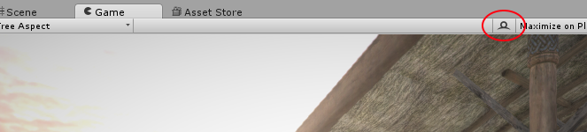

RenderDoc Integration
The Editor supports integrated launching and capture of the RenderDoc graphics debugger, for detailed frame introspection and debugging.
The integration is only supported for RenderDoc versions 0.26 or later, so if an earlier version is currently installed it is required that you update to at least version 0.26.
Note: While the integration is only available in the Editor, it is quite possible to use RenderDoc as normal with no extra setup in standalone player builds.
Note: Frames can only be captured if Unity is running on a platform and API that RenderDoc supports - at time of writing that means Windows only, and either DirectX 11 or OpenGL Core profile. If another API is in use, the RenderDoc integration will be temporarily disabled until a supported API is enabled.
Loading RenderDoc
If a RenderDoc installation is detected, then at any time after loading the Editor you can right click on the tab for the Game View or Scene View and click the 'Load RenderDoc' option. This will reload the graphics device so you must save any changes, but afterwards RenderDoc will be ready to capture without having to restart the editor or build a standalone player.

Note: You can also launch the Editor via RenderDoc as normal, or pass the -load-renderdoc command line option to load RenderDoc from startup.
Capturing a frame with RenderDoc
When a compatible version of RenderDoc is detected as loaded into the Editor, a new button will appear on the right side of the toolbar on the Game and Scene Views.

Pressing this button will trigger a capture of the next frame of rendering for the view. If the RenderDoc tool UI has not been opened, a new instance will be launched to show the capture, and if it is already running the newest capture will automatically appear there. From there you can open the capture and debug using the tool.

Including shader debug information
By default to optimise the size of DirectX11 shaders, debugging information is stripped out. This means that constants and resources will have no names, and the shader source will not be available. To include this debugging information in your shader, include #pragma enable_d3d11_debug_symbols in your shader's CGPROGRAM block.
Alternative graphics debugging techniques
If you build a standalone player using D3D11, you can capture a frame and debug using the Visual Studio graphics debugger.